When Does Flow Matching Help Deterministic Multimodal Prediction?
A Spatial Transcriptomics Study
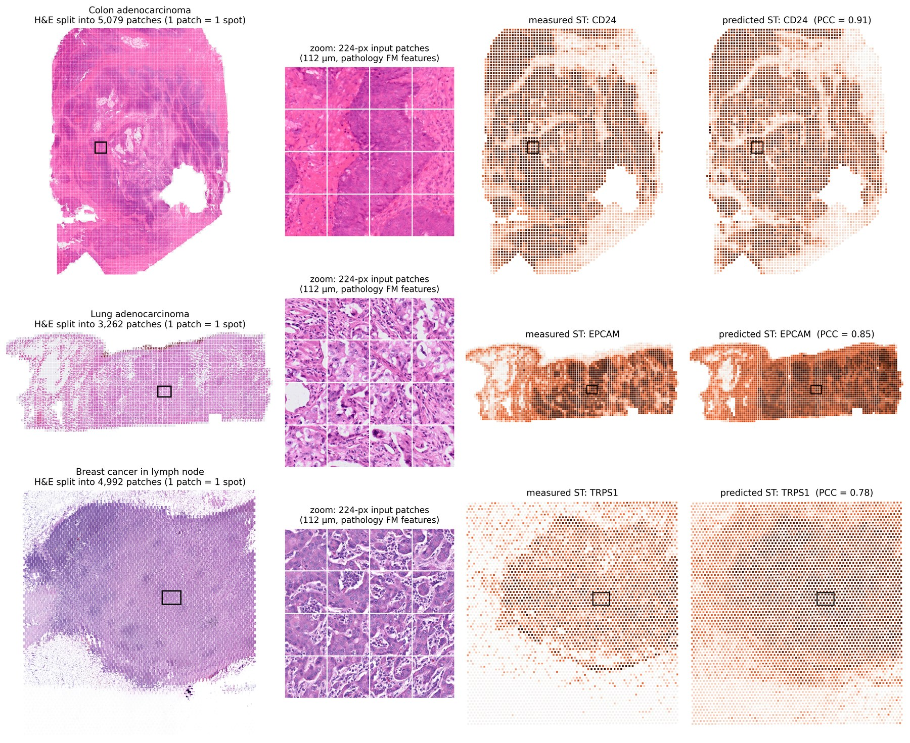
Abstract
Flow matching is increasingly used beyond open-ended generation, including prediction tasks whose outputs are effectively deterministic, yet it remains unclear why flow matching helps when diversity is not the objective. We study this question in histology-conditioned spatial transcriptomics (ST) prediction, a challenging sparse high-dimensional multimodal task where direct regression with pathology foundation features is already competitive. We disentangle several possible explanations and find that the gain does not come from simply adding a flow objective, injecting noisy target-side states, or increasing architectural complexity. We instead identify intermediate flow states as paired, time-indexed target-side signals: they contain condition-aligned information about the target, but are mixed with source noise and residual variation. Their benefit emerges only when this information is selectively routed into histology representations. Guided by this mechanism, we instantiate conditional flow matching with simple gated self-attention to learn interactions between histology tokens and noisy ST states. Across high-resolution ST datasets, the model improves spatial correlation over regression and flow-based baselines, with stable convergence and favorable scaling under larger and sparser gene panels.
Four conditions under which flow matching helps
xt must come from the same tissue context as the histology.
How much xt can be trusted depends on t; late, nearly clean states invite copying.
Share xt as set-level context; never hand each spot its own noisy answer.
The benefit is largest when few paired histology–ST spots are available.
Setup
Each slide is tiled into patches, one per measured spot. The patches are not i.i.d.: neighbouring spots share histology and expression, and each slide has its own expression distribution. The model therefore processes a group of spots jointly: histology tokens and noisy ST tokens xt = t·x1 + (1−t)·ε are concatenated and mixed by quadrant-gated self-attention, and the clean endpoint is predicted (x-prediction).
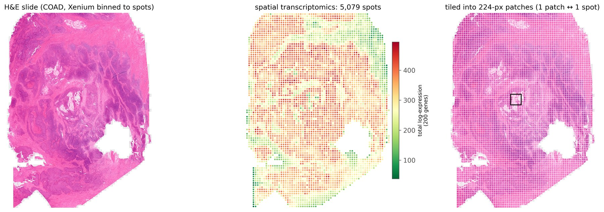
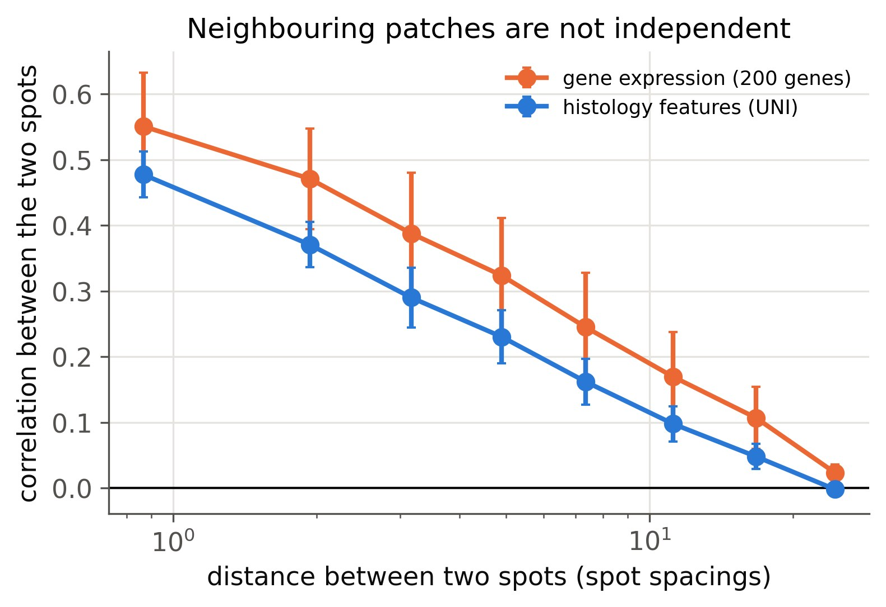
Results
Gene-wise Pearson correlation (PCC) on held-out slides, all methods using the same UNI pathology features (paper, Table 2).
| Method | COAD | LYMPH | LUNG | PAAD | PRAD | CCRCC |
|---|---|---|---|---|---|---|
| Regression | 0.404 | 0.295 | 0.583 | 0.486 | 0.302 | 0.248 |
| STFlow (ICML 2025) | 0.401 | 0.261 | 0.627 | 0.485 | 0.298 | 0.259 |
| Ours (gated self-attention) | 0.459 | 0.323 | 0.635 | 0.492 | 0.366 | 0.314 |
Finding 1The learned flow is effectively deterministic
We sample the same model on a held-out slide from 8 different prior noises. For every one of 200 genes, the seed-to-seed variation is about 500× smaller than the prediction error and 600× smaller than the spatial signal. The benefit of flow matching here cannot come from sampling diversity.
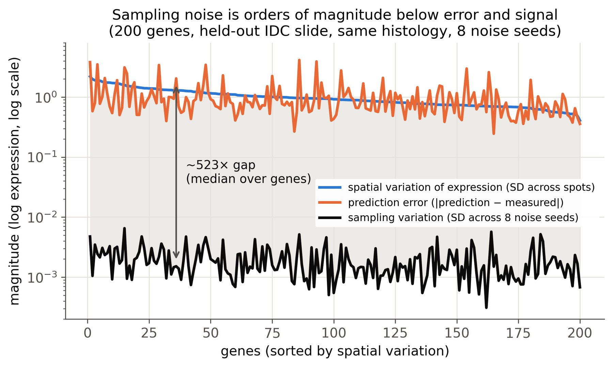
Finding 2 · C1xt is read as slide-level context, and it must be aligned
Probing a trained model with xt built from the measured test expression: true targets and the same targets shuffled across spots give identical accuracy, so the model reads the tissue's expression distribution rather than per-spot answers. Its own sampling trajectory recovers that information as well as the true targets do. xt taken from another slide lowers accuracy below pure noise.
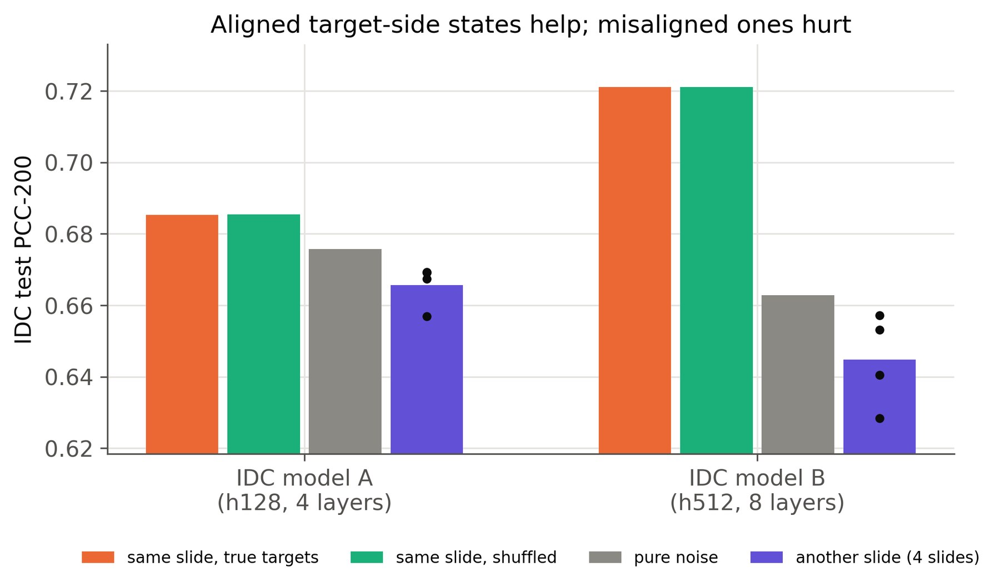
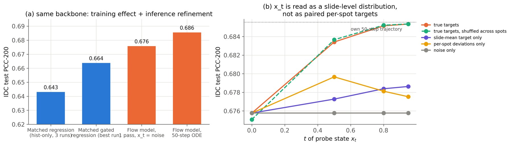
Finding 3 · C2Time decides how much xt can be trusted
xt carries target information only late in the path, mixed with source noise. If a model is allowed to train on late, nearly clean per-spot states, it learns to copy them: accuracy falls monotonically while its reliance on xt rises.
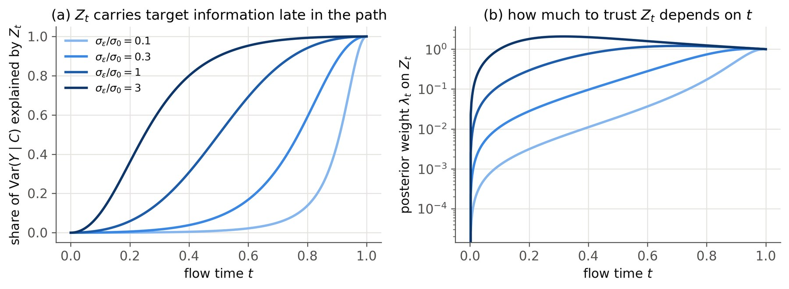
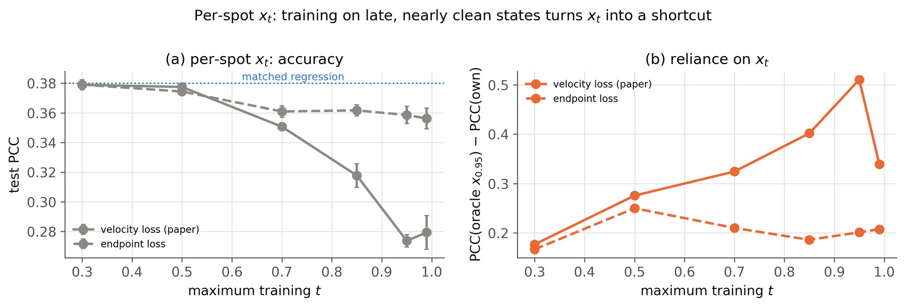
Finding 4 · C3Shared context helps; per-spot routing creates a shortcut
Same backbone, real UNI features, 10 dataset splits, 3 seeds each. Integrating xt as set-level context beats an architecture-matched regression on 7/10 splits (mean +0.019 PCC); giving each spot its own noisy target loses (mean −0.023).
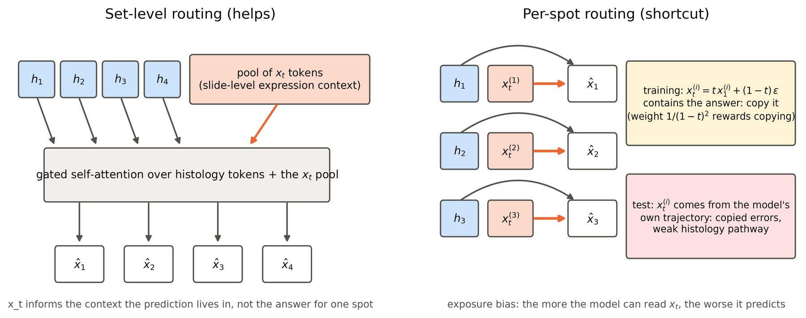
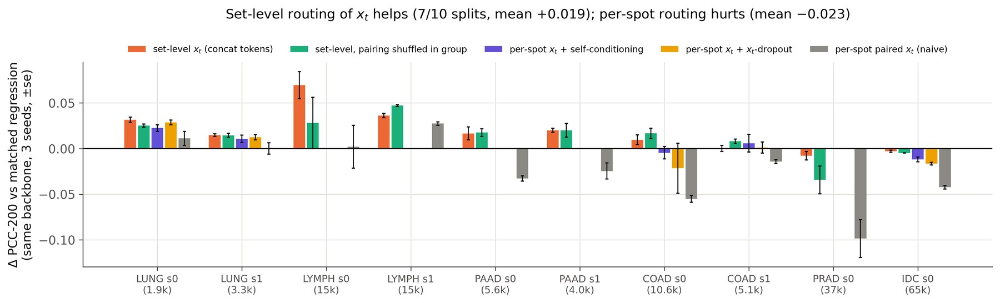
Finding 5 · C4Most useful when paired data are scarce
Below ~20k training spots, set-level target supervision is above matched regression on 7/8 splits and never below it; with 37k–65k spots it is on par.
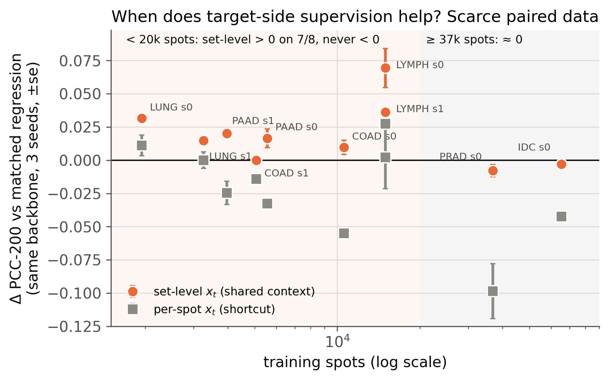
Takeaways
1. In deterministic prediction, flow matching acts as target-side supervision, not as a sampler.
2. It helps when xt is aligned, time-aware and selectively integrated, especially with limited paired data.
3. Two cheap diagnostics for any generative predictor: an oracle-xt probe (can the model read xt?) and
own trajectory vs. single pass (does it use xt at inference?).
Citation
@inproceedings{xu2026flowdeterministic,
title = {When Does Flow Matching Help Deterministic Multimodal Prediction? A Spatial Transcriptomics Study},
author = {Xu, Haoran and Yuan, Wei and Han, Xiao},
booktitle = {Advances in Neural Information Processing Systems},
year = {2026}
}